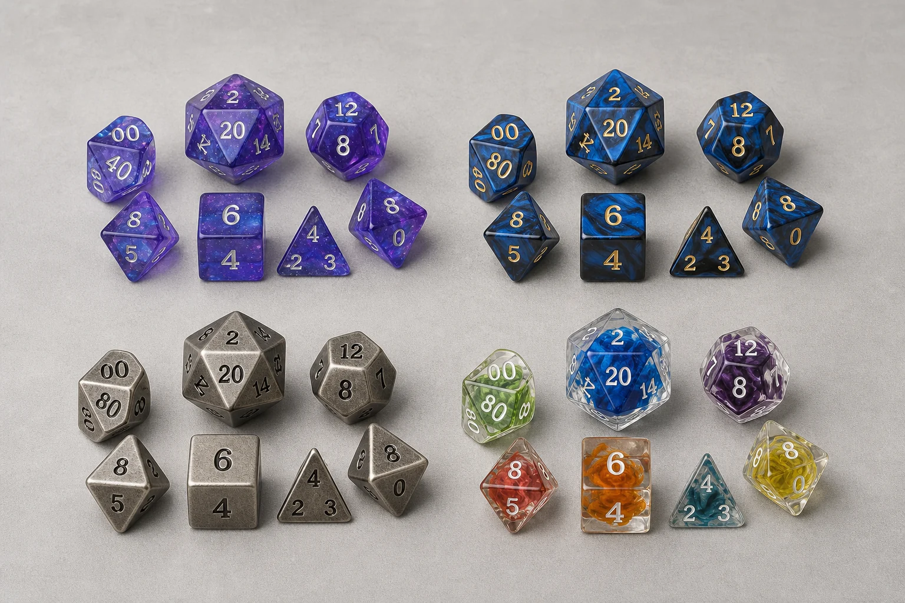
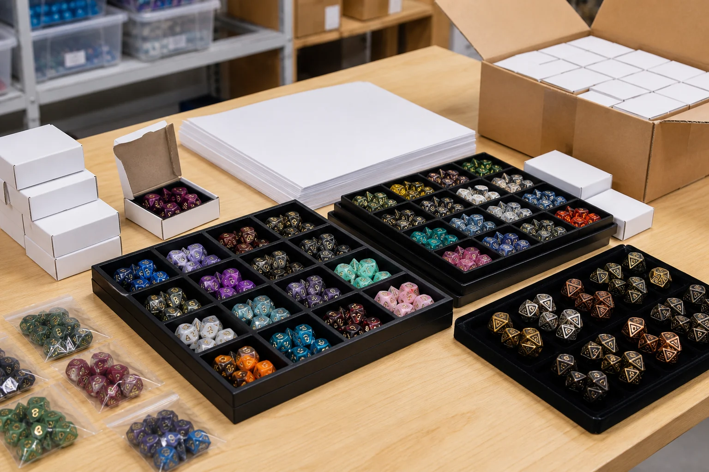

The question “where to buy DND dice” sounds simple, but the useful answer depends on who is buying and what the dice need to do. A new player may only need one readable seven-piece polyhedral set. A Game Master may need extra d6 and d20 dice for encounters, monsters, or table tracking. A game store needs a balanced assortment that looks good on a shelf and can be reordered. A dice brand or RPG publisher may need custom materials, a logo, retail packaging, and repeatable quality.
This guide separates those buying jobs so you can compare the right channel instead of choosing only by the lowest visible price. It covers local game stores, specialty online retailers, marketplaces, and direct wholesale suppliers. It also explains what to inspect before buying standard resin dice, sharp-edge resin dice, metal dice, oversized dice, or a custom DND dice set.
What is the best place to buy DND dice?
There is no single best store for every buyer. The best place is the one that matches your required combination of speed, selection, confidence, quantity, and support.
- Choose a local game store when you want to see the number contrast, feel the weight, check the finish, and buy immediately. It is also a good option when you want advice from people who understand tabletop play.
- Choose a specialty online dice shop when you want more colors, inclusions, themes, individual dice, or less common formats than your local shelf can carry. Online product pages are useful for comparing a larger range, but inspect photos and policies carefully.
- Choose a marketplace when convenience, familiar checkout, or buyer protection is important. The seller matters as much as the platform, so compare reviews, product photos, material descriptions, and the stated return process.
- Choose a direct wholesale supplier when you need bulk DND dice, private label packaging, custom logo dice, repeat orders, or a product assortment for a store, brand, subscription box, or RPG campaign.
For most individual players, the first decision is not brand prestige. It is readability. A beautiful set with low-contrast numbers can be frustrating during play. For business buyers, the first decision is also not just unit cost. It is whether the supplier can consistently deliver the material, finish, number color, packaging, and quantity that the sales channel requires.
Where to buy DND dice: four buying channels compared
Use the comparison below as a starting point. “Best for” describes the typical buying job, not a guarantee about every seller in a category.
| Buying channel | Best for | What to check | Typical limitation |
|---|---|---|---|
| Local game store | Immediate purchase and in-person inspection | Number readability, complete set, finish, replacement policy | Smaller selection and less access to niche materials |
| Specialty online shop | Color, theme, material, and individual-die variety | Accurate photos, dimensions, material notes, shipping and returns | You cannot inspect the actual set before delivery |
| Marketplace | Convenience and broad seller coverage | Seller identity, reviews, product consistency, return terms | Quality can vary between listings and sellers |
| Wholesale supplier or manufacturer | Bulk inventory, private label, or custom production | Catalog, samples, MOQ, packaging, process, QC, delivery plan | Requires planning and may not suit a one-set purchase |
Local game stores: the fastest quality check
A local store gives you an advantage that product photos cannot: you can hold the actual dice. Look at the d20 from normal seated distance, rotate a d6 and d8, and check whether the number fill is clean. Confirm that the set includes a d4, d6, d8, d10, percentile d10, d12, and d20 when you are buying a standard seven-piece set. If the store allows exchanges, ask what happens if a die is damaged or a face has a manufacturing defect.
Local buying is also helpful for first-time players. A staff member may point out that an extra d6 is useful for spells or damage, that metal dice need a rolling tray, or that some sharp-edge sets are designed more for display and premium presentation than for casual rolling on an unprotected table.
Specialty online shops: the widest personal selection
Online specialty shops are useful when you have a specific color story, character theme, or material in mind. Search by the feature that matters: translucent resin, sharp-edge resin, metal, liquid-core, oversized d20, single replacement die, or complete RPG dice set. Read the description for dimensions and finish instead of relying only on a lifestyle photo.
Before ordering, review several close-up faces. A set can look excellent in a wide product photograph while the numbers are difficult to read at the table. Also consider how the dice will be stored. A soft pouch, tray, or fitted box protects sharp corners and reduces the chance of metal dice damaging other pieces.
Marketplaces: convenient, but evaluate the seller
Marketplaces can be a reasonable route for a standard DND dice set, replacement dice, or a quick gift. The risk is inconsistency: two listings may use similar words but differ in size, number color, finish, or actual material. Check whether the images show the exact product, whether the seller explains the set contents, and whether reviews mention missing pieces, blurred numbers, chipped edges, or color variation.
Do not assume that a high review count proves that every current listing is identical. Look at recent reviews and the seller's response to problems. A clear return process is particularly important for transparent dice, specialty inclusions, and products where the final color can differ from a screen image.
How to choose a quality DND dice set
Whether you buy online or in person, evaluate the dice in the same order. This reduces impulse buying and makes it easier to compare two sets with very different visual styles.
- Confirm the format. A standard polyhedral set usually includes seven pieces: d4, d6, d8, d10, percentile d10, d12, and d20. Some products are single dice, display d20s, or themed bundles, so read the contents carefully.
- Check number readability. The number fill should contrast with the body color. Inspect the d20 first because it is often the die used most during play, then check smaller faces where tight spacing can reduce legibility.
- Review the surfaces and edges. Look for clean faces, consistent edges, no obvious bubbles or cracks, and no excess material around the number engraving. Small handmade variations can be normal, but damage and unreadable faces are not the same thing.
- Match the material to the use. Standard resin is versatile and easy to carry. Sharp-edge resin has a premium appearance. Metal adds weight and a distinct roll, but a tray or rolling surface is important. Oversized dice need storage and display space.
- Consider the table environment. A dark table, low light, or busy game mat changes how numbers read. If possible, check the set under the same kind of lighting used during play.
- Check the packaging. A pouch may be enough for personal use. A fitted box, tin, or printed retail carton can matter more for gifts, shelves, subscription boxes, and private-label products.
- Read the support policy. Confirm how the seller handles missing pieces, transit damage, defects, color variation, and returns. This is part of the product decision, not an administrative detail.
Resin, sharp-edge, metal, and specialty dice: what changes?
Material affects appearance, weight, sound, durability, pricing, packaging, and shipping assumptions. It also affects the kind of buyer who will value the product. A broad game-store assortment may need accessible standard resin sets alongside a smaller premium section. A collector-oriented brand may lead with metal or sharp-edge resin. A custom project may combine a standard set with one oversized display die or a branded tray.

Standard resin or acrylic-style dice
Standard resin sets are a practical starting point because they are light, portable, and available in many color combinations. They work well for new players, regular sessions, event gifts, and a broad retail assortment. When buying translucent or inclusion-style resin, look at the number color and whether internal effects cover the faces from common viewing angles.
Sharp-edge resin dice
Sharp-edge resin dice are often chosen for a more premium visual language. The flatter faces and crisp corners can make a color scheme look more deliberate, especially in product photography and retail displays. Ask how the set should be rolled and stored, and confirm that the number fill remains readable rather than being overwhelmed by a complex inclusion.
Metal dice
Metal dice appeal to buyers who want a heavier hand feel, a distinctive finish, or a premium gift. Weight makes protective packaging and a suitable rolling surface more important. Check the finish for even coverage, inspect recessed numbers, and confirm that the box or tray can hold the set without metal pieces rubbing against one another.
Oversized and specialty dice
Large d20s, liquid-core styles, hollow dice, and other specialty formats can create a strong focal product. They also need more careful product information: actual size, intended use, storage, packing method, and whether the item is a single display die or a complete set. Retailers should decide whether specialty dice are a hero product, an add-on, or part of a themed collection before ordering.
For a more detailed category overview, see our guide to the types of DND dice. Buyers comparing premium materials can also review sharp-edge resin dice versus standard resin dice and the metal dice wholesale buying guide.
Where can game stores buy DND dice in bulk?
Game stores, distributors, dice brands, and RPG creators usually need more than a checkout page. They need a repeatable product decision. A bulk order should start with a target customer and assortment, then move through samples, packaging, MOQ, delivery planning, and reorder logic.
Start with the role of the product in your assortment. A general game store may need core seven-piece sets in several color families, extra d6 and d20 options, and a few premium metal or sharp-edge sets. A fantasy-focused brand may need themed colors, symbols, and custom packaging. A Kickstarter or subscription-box buyer may need a fixed set count, a planned insert, and a delivery window connected to fulfillment.
Use a catalog to narrow the SKU list
A catalog is useful when it shows more than a single hero photo. Record the SKU, material, set contents, approximate size, available finish, number color, packaging route, and any sample reference. Keep a short list of proven products and a second list of experiments. This makes the first quote easier to evaluate and prevents a buyer from requesting too many unrelated options at once.
You can review our wholesale dice catalog for product directions, then compare bulk polyhedral dice and game store dice supplier information. These pages are written for buyers who need to turn a product search into an assortment and purchasing conversation.
Request samples before approving a larger order
A sample kit is not only a quality-control step. It is a merchandising test. Put the sample on the shelf, photograph it under store lighting, check whether the packaging fits your display, and ask whether the theme is understandable without a long explanation. For custom DND dice, inspect logo scale, face placement, number color, surface finish, and the fit of the chosen box or pouch.
MOQ can change with material, die size, number of custom faces, packaging, artwork, and the number of colorways. That is why a useful supplier conversation discusses MOQ by SKU and packaging route rather than promising one universal number. Use the wholesale dice MOQ guide and custom dice sample kit guide to prepare the right questions.

Plan the order around reorders, not only the first shipment
A product that sells out quickly but cannot be repeated creates a poor customer experience. Before approval, ask which details need to stay consistent: resin color, metal finish, number fill, logo artwork, box dimensions, insert, and set contents. Keep an approved sample or reference record so a future reorder has a clear comparison point.
Also separate the products that need custom production from the products that can be selected from an existing catalog. A mixed assortment can reduce unnecessary development work while giving the store enough variety. The right balance depends on your launch size, customer profile, and willingness to carry new SKUs.
Custom and wholesale DND dice quote checklist
When you contact a supplier, include enough information to receive a useful first response. A short, complete brief usually works better than a long message that leaves the key decisions open.
- Buyer type: game store, distributor, dice brand, RPG publisher, Kickstarter creator, subscription box, event, or private-label retailer.
- Product direction: standard polyhedral set, individual d20 or d6, metal dice, resin dice, sharp-edge resin, oversized display dice, or a mixed assortment.
- Quantity: estimated total units, number of sets, number of SKUs, and expected reorder pattern.
- Material and finish: resin, metal, transparent, opaque, plated, polished, colored, engraved, or another specific surface direction.
- Artwork: logo, symbol, icon, character mark, number style, preferred face, and available vector or high-resolution reference files.
- Packaging: pouch, paper box, rigid box, tin, display carton, insert, barcode area, private label, or gift-ready presentation.
- Sample request: existing catalog samples, a material comparison, logo placement proof, or a full pre-production sample.
- Delivery: destination country, target launch date, preferred shipping method, and any fulfillment or labeling requirements.
If you have reference images or a rough sketch, attach them. They help a supplier understand the intended shape, color, logo scale, and packaging direction. A reference image is a starting point for discussion, not a guarantee that another product can be copied exactly. Confirm ownership and permitted usage for any artwork you submit.
How to avoid common DND dice buying mistakes
Buying from a photo alone. Product photography is useful for color and styling, but it cannot prove readability, actual size, or weight. Use dimensions, close-up images, reviews, or a sample.
Choosing a set with no clear contents. A product title may say “dice set” while the package contains one die, a nonstandard mix, or a display-only item. Confirm the exact number and type of dice before checkout.
Ordering too many colorways too early. Variety is attractive, but a broad first order can make reorders and stock planning difficult. Start with a focused assortment linked to your customer profile, then expand from the products that receive attention.
Leaving packaging until the end. A box or pouch changes the product's shelf footprint, perceived value, shipping protection, and MOQ. Include packaging in the first supplier conversation, especially for private label or retail-ready dice.
Confusing a low price with a low total cost. Unit price is only one part of the decision. Add sampling, packaging, freight, breakage allowance, storage, labeling, and the time needed to resolve defects or missing pieces. A slightly more organized buying process can reduce the cost of the whole order.
DND dice buying FAQ
Where can I buy DND dice?
You can buy DND dice from a local game store, a specialty online dice shop, a marketplace, or a direct wholesale supplier. Choose based on whether you need same-day inspection, broad variety, convenience, or bulk and custom support.
What is the best place to buy DND dice?
The best place depends on the job. A local game store is useful for immediate inspection, a specialty shop usually offers curated variety, a marketplace offers convenience, and a manufacturer is the practical route for bulk, private label, or custom DND dice.
Should I buy DND dice online or from a local game store?
Buy locally when you want to inspect readability and finish immediately or support a nearby retailer. Buy online when you need more colors, materials, individual dice, niche themes, or a larger comparison set. For business orders, request samples before committing to a production quantity.
How do I choose a quality DND dice set?
Check that the complete set has the expected dice, numbers are readable from normal playing distance, faces are clean, edges are consistent, and the material and finish match the product description. Also check packaging, seller support, and return terms.
Where can game stores buy DND dice in bulk?
Game stores can source bulk DND dice from a wholesale distributor, a specialist dice supplier, or a direct manufacturer. Ask for a catalog, sample kit, MOQ by SKU, packaging choices, production timing, and shipping information before placing a wholesale order.
What should I check before ordering custom DND dice?
Confirm the material, die shapes, dimensions, number color, logo or symbol artwork, packaging format, target quantity, sample approval process, MOQ, delivery country, and artwork ownership or usage requirements. These details allow a supplier to quote the project accurately.
Do I need a full 7-piece set or individual dice?
A full seven-piece polyhedral set is the simplest choice for a new player. Individual dice are useful for replacing a missing shape, adding extra d6 or d20 dice, building a themed collection, or creating a retail assortment with different price points.
Turn your dice search into a clear purchasing plan.
Wholesale Dice Catalog
Review product directions for resin, metal, hollow, and specialty dice before building an SKU list.
Free Catalog & Sample Kit
Request a catalog and sample conversation for materials, packaging, MOQ, and buyer requirements.
Custom RPG Dice
Discuss custom materials, logo faces, colors, packaging, and a repeatable production program.
Need a catalog or samples before you buy?
Send your buyer type, target products, quantity, packaging direction, and delivery country. We can help you compare catalog options, sample requirements, MOQ, and custom DND dice routes.
Final buying checklist
Decide whether you need local inspection, online variety, marketplace convenience, or supplier support. Confirm the exact set contents, readability, material, finish, packaging, and return or sample process. For bulk or custom DND dice, prepare the SKU list, quantity, artwork, packaging, MOQ questions, and delivery country before asking for a quote. That information helps you compare suppliers on the details that affect the final product, not only on the first number you see.